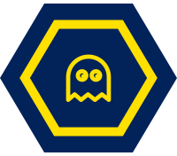

Formerly Exploring Tech I
Exploring Technology and Art
S1 Grades 6–12Combine creativity with computer science to build your own interactive games and music. You'll begin using Code.org's Game Lab environment to program shapes, sprites, and animations, handle user input, and use variables and conditionals to turn simple images into complex, multi-level games.
Then you'll explore foundational programming concepts through music, using code to build, remix, and perform original songs. Through sequencing, loops, and functions, you'll practice computational thinking like pattern recognition, algorithmic thinking, and debugging to design, test, and refine your musical ideas.